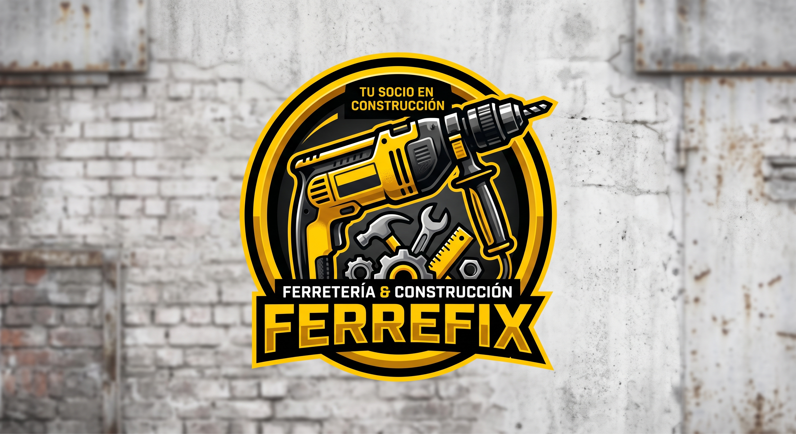

Estudiante de Ingeniería en Informática especializado en Desarrollo de Software. Mi enfoque principal es el diseño, construcción y optimización de sistemas backend robustos, priorizando la escalabilidad, la mantenibilidad y la arquitectura limpia.
Busco soluciones eficientes que garanticen un rendimiento sostenible y una estructura de código ordenada basada en patrones de diseño probados en la industria (Java, Spring Boot, REST APIs, Microservicios y Docker).

Modernización digital de una ferretería mediante la implementación de 10 microservicios autónomos con bases de datos independientes y orquestados con Docker. Cuenta con seguridad basada en Spring Security y JWT, pruebas unitarias con JUnit 5 y Mockito, e integración total de inventarios, ventas, arriendos y reportes.